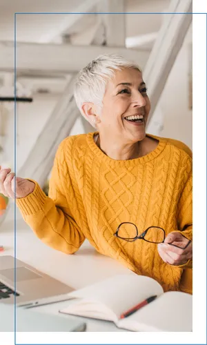

GENETIC BRAIN DOMINANCE PROFILING
Connecting Hearts & Minds For Performance
Discover how your natural brain dominance can influence the way you communicate, learn and respond under stress — and gain practical insight for children, families, careers, teams and relationships.
Book A Profile SessionMEET NOELINE
Understanding yourself changes everything
Since 2004, Noeline Levinson has provided Genetic Brain Dominance Profiling for students, families, couples and businesses. Her own experience of struggling with dyslexia led to a deep appreciation of what can change when we understand how we naturally process information.
“Once I had my profile done I really understood why I had battled all those years. I began to respect what I could and could not manage.”
WHAT IS BRAIN PROFILING?
Unlocking the power of human potential
Brain Profiling explores patterns of dominance across the brain and body. The session is designed to give you a framework for understanding how you may respond when under pressure, along with practical strategies for communication, learning and everyday life.
Book NowHOW CAN WE HELP?
Which best describes the support you're seeking?

Children
Understand your child's unique needs and build a toolkit to support them.
Learn More →
Students
Help young people gain insight as they make choices about study and career.
Learn More →
Professionals
Understand patterns at work and gain clarity about the way forward.
Learn More →
For Teams
Strengthen communication, understanding and teamwork.
Learn More →
For Recruitment
Add another perspective when considering fit for a role and team.
Learn More →
For Relationships
Build a framework for understanding differences and navigating conflict.
Learn More →A CLIENT'S EXPERIENCE
“Profoundly grateful”
“The information you discovered was an exact match to his experience. He felt known and valued. Shaping his life choices to match how he ticks is invaluable.”
— Jen R., New Zealand
YOUR SESSION
Here's what you can expect
Sessions are held online and usually take 60–90 minutes. The first part identifies your Brain Profile; the remainder of the appointment is spent explaining it and discussing practical implications and strategies.
Book Your Profile SessionFree Needs Assessment
Wondering whether a Brain Profile could be useful for you or someone you love?